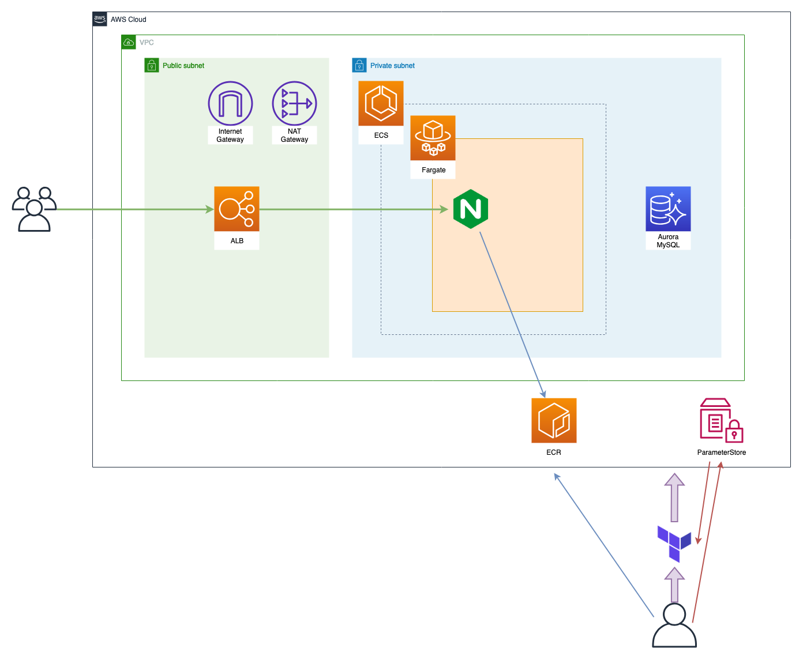
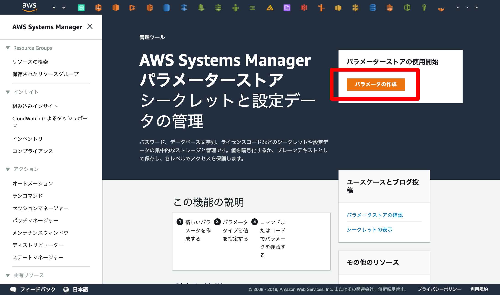
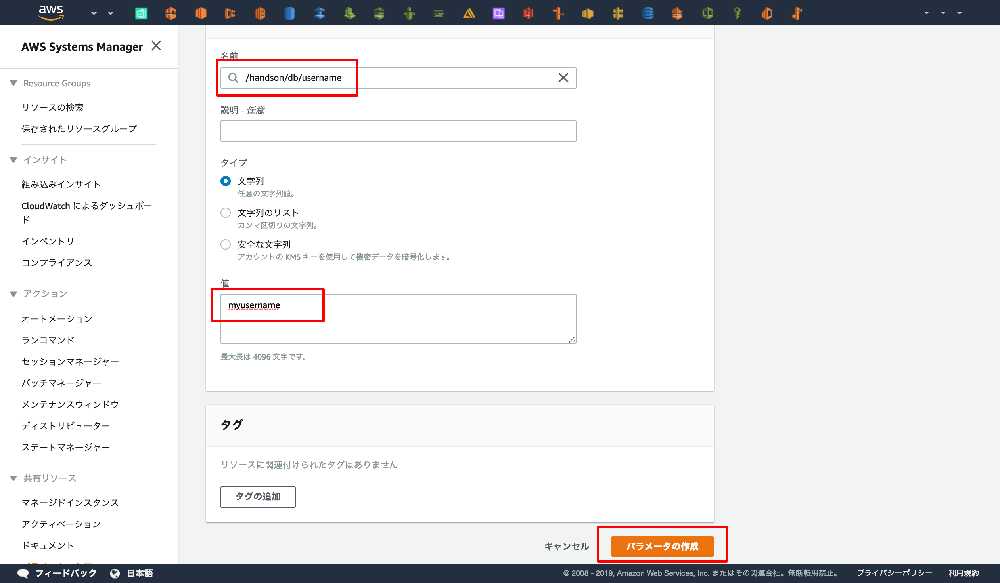
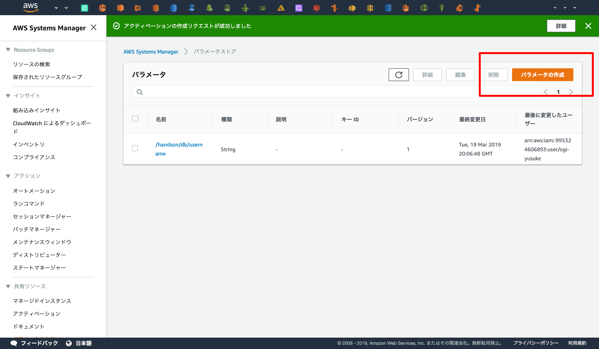
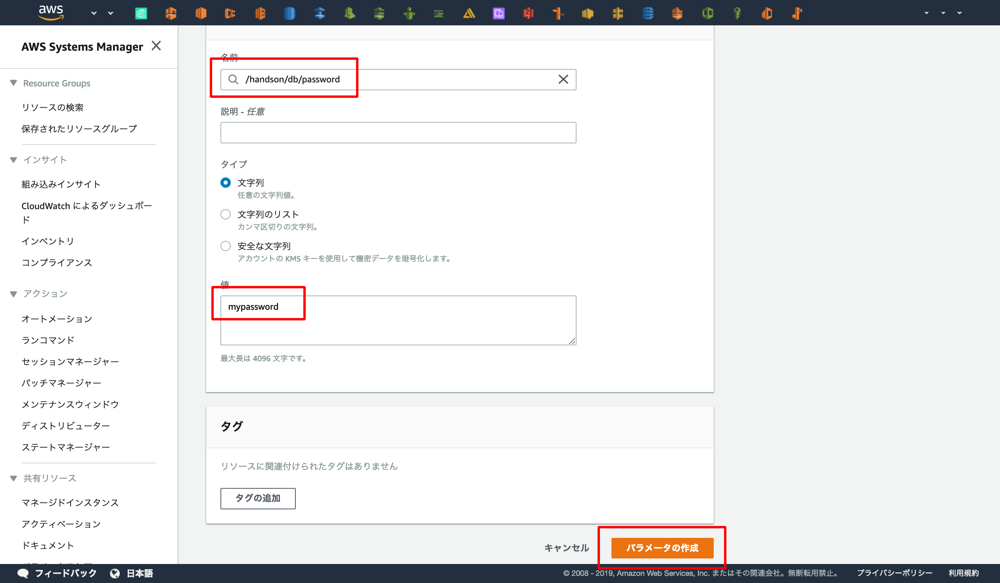
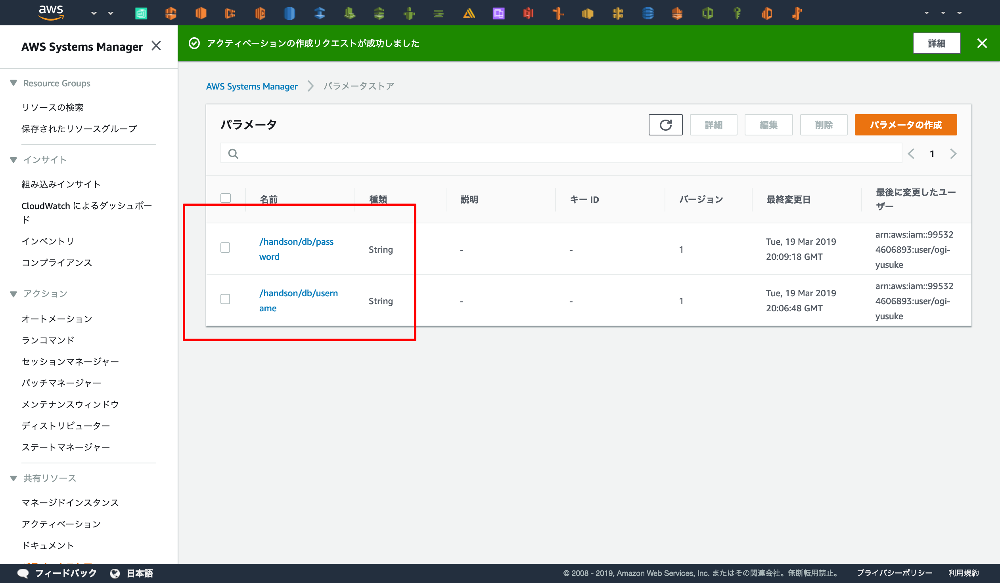
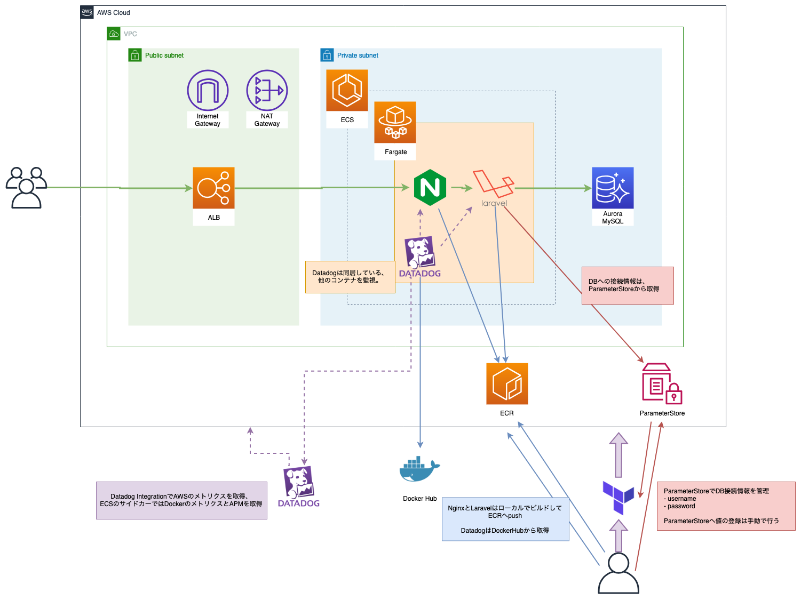

LaravelをECSで動かす
概要¶
ECS上でLaravelを動かしてみましょう
ハンズオン環境の構築¶

Terraformで環境構築を行いますが、ParameterStoreとECRだけ手動で構築します。
ParameterStore¶
ParameterStoreはAWSのサービスの1つで、シークレット情報や設定情報を管理するためのサービスです。
このハンズオンではAurora(AWSのマネージドDB)の初回起動時に作成される "DB接続情報" と "暗号化キー" をParameterStoreへ登録します。
早速パラメータを登録してみましょう。
AWS Systems Manager - ParameterStore

DBユーザー名の登録¶
まずはユーザー名を登録します。
名前を /handson/db/username で登録し、値は任意の文字列を入力してください (1 ~ 16文字の英数字を使用する必要があります)。
ここでは myusername とします。


DBパスワードの登録¶
続いてパスワードを登録します。
名前を /handson/db/password で登録し、値は任意の文字列を入力してください (8文字以上の英数字を使用する必要があります)。
ここでは mypassword とします。

接続情報が登録されているかの確認¶
/handson/db/username と /handson/db/password が登録していることを確認しましょう。

DBのデータベース名を登録¶
デフォルトで作成されるデータベースの名前を登録します。
名前を /handson/db/name で登録し、値は任意の文字列を入力してください。
ここでは mydatabase とします。
GUIに飽きてきた頃だと思うので、データベース名はCLIから登録します。
$ aws ssm put-parameter --name "/handson/db/name" --value "mydatabase" --type String { "Version": 1 }
Laravel用の暗号化キーを生成・登録¶
Laravelでは起動時に暗号化キーが必要なので、その生成と登録を行います。
docker-composeからphpコマンドを叩き、暗号化キーを生成し、変数へ展開します。
$ docker-compose run app php artisan key:generate --show base64:Qg1++xxxxxxxxxxxxxxxx= $ LARAVEL_APP_KEY=base64:Qg1++xxxxxxxxxxxxxxxx=
DBの接続情報でも使用した "ParameterStore" で暗号化キーも使用します。
handson/app/key という命名でキーを登録します。
$ aws ssm put-parameter --name "/handson/app/key" --value ${LARAVEL_APP_KEY} --type String { "Version": 1 }
ECRへpush¶
新規ECRリポジトリ作成¶
GUIをポチポチするのがそろそろしんどくなってきたころだと思うので、AWS CLIで操作していきます。
nginx と app の2つのリポジトリを作成します。
$ aws ecr create-repository --repository-name nginx $ aws ecr create-repository --repository-name app
作成されたか、レジストリを一覧してみます。
nginx , handson-nginx , app の3つが存在していれば完了です。
$ aws ecr describe-repositories --query 'repositories[].repositoryName' [ "nginx", "app" ]
Dockerのビルドとpush¶
nginxのビルドとpush
$ export ECR_URI_NGINX=$(aws ecr describe-repositories --repository-names nginx --query 'repositories[0].repositoryUri' --output text) $ docker build -t ${ECR_URI_NGINX} -f docker/nginx/Dockerfile . $ docker push ${ECR_URI_NGINX}
Laravelのビルドとpush
$ export ECR_URI_APP=$(aws ecr describe-repositories --repository-names app --query 'repositories[0].repositoryUri' --output text)
$ docker build -t ${ECR_URI_APP} .
$ docker push ${ECR_URI_APP}
プロビジョニング¶
さあ、実際にTerraformでプロビジョニングを実行し、AWS環境を構築してみましょう
$ docker run \ -e AWS_ACCESS_KEY_ID=<AWS ACCESS KEY> \ -e AWS_SECRET_ACCESS_KEY=<AWS SECRET ACCESS KEY> \ -v $(pwd):/templates \ -w /templates \ -it \ --entrypoint=ash \ hashicorp/terraform:0.11.12 $ terraform init $ terraform plan $ terraform apply
プロビジョニングには15分ほどかかります。
その間に、terraformのコードを確認しましょう。
コードの確認¶
terraformのディレクトリは以下のような構造になっています。
terraform apply を実行すると main.tf が最初に実行され、 main.tf から他のディレクトリ/ファイルを呼び出します。
まずは main.tf から読み始めると良いでしょう。
.
|-- acm
| `-- main.tf
|-- container_definitions.json
|-- ecs_cluster
| `-- main.tf
|-- ecs_service
| `-- main.tf
|-- elb
| `-- main.tf
|-- main.tf
|-- network
| `-- main.tf
`-- rds
`-- main.tf
container_definition.json¶
ECS上で「どのコンテナ」を「どう動かす」のかを定義するための設定です。
開発時は既に設計されたTerraformが多いと思いますが、コンテナへ注入する環境変数は運用時に増やすことが少なからずあるでしょう。なので、環境変数の展開方法に絞って紹介します。
環境変数の展開¶
environment で環境変数を起動したコンテナへ展開することが可能です。
今回は LOG_CHANNEL と APP_ENV を定義してみます。
LOG_CHANNEL は stderr でログを標準エラーへ出力することを決め打ちします。
APP_ENV は変数としてTerraformの呼び出し時に動的に与えます。
"environment": [ { "name": "LOG_CHANNEL", "value": "stderr" }, { "name": "DB_CONNECTION", "value": "mysql" }, { "name": "DB_HOST", "value": "${db_host}" } ]
ParameterStoreの値を環境変数へ展開¶
ECSではParameterStoreの値を直接呼び出すことが可能できます。
今回はその機能を使用して、ParameterStoreに登録した暗号化キーをECSで起動したコンテナの環境変数へ展開します。
"secrets": [ { "name": "APP_KEY", "valueFrom": "/${name}/app/key" }, { "name": "DB_USERNAME", "valueFrom": "/${name}/db/username" }, { "name": "DB_PASSWORD", "valueFrom": "/${name}/db/password" } ],
作成されるサービス・リソースのコンソールへのリンク¶

以下が今回使用する主要なサービスのWebコンソールへのリンクです。
プロビジョニングがどのように実行されているのか、ターミナルを確認しつつWebコンソールを追うと良いでしょう。
- VPC
- ECS
- RDS
- Parameter Store